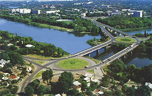

Первомайськ - місто трьох держав
Первомайськ має воістину неповторну історію. Своєрідність її полягає в тому, що місто утворене з трьох поселень, які належали до трьох різних держав – Запорізької Січі , Турції та Польщі.
Межа між Запорізькою Січчю та Польщею проходила по річці Синюха.
Весною 1676 року на лівому березі
Синюхи запорізькими козаками було вибране місце для укріплення, якому дали назву Орлик. В 1743
році російським урядом було прийняте рішення про переобладнання укріплення в 6-ти бастіонний шанець, який
укріпили зброєю та гарматами. В 1772 році – слобода Орлик була зарахована до розряду міст, в 1781 році
поселення дістало назву Ольвіополь.
В 1750 році на лівому березі р. Південний Буг, де проходила межа між Туреччиною та Січчю, польський поміщик Потоцький збудував карантинну заставу Богополь. В 1762 році козаки і біглі українські кріпаки на правому березі Південного Бугу заснували слободу Олта (перше найменування нинішньої частини Первомайська), яка належала Турції.
Таким чином були створені три частини міста – Ольвіополь, Богополь та Голта, які в якості окремих поселень проіснували до 1919 року. В цьому році на мітингу 1 травня було прийняте рішення про об’єднання всіх трьох частин в одне місто і в честь дня солідарності трудящих назвати його Первомайськом.
Географія
Місто Первомайськ знаходиться в північно-західній частині Миколаївської області, у 180 км від Миколаєва, при злитті річок Південного Бугу та Синюхи, у регіоні, що знаходиться на межі степу та лісостепу. Площа, яку займає місто дорівнює 25,13 кв. км. Населення міста – 68,2 тис. осіб.
Рельєф міста - це хвиляста рівнина, розрізана долинами і балками на окремі водорозділові плато. Місцевість регіону має слабкий уклін у південно-східному напрямку. Середня висота над рівнем моря 200 м.
Місцеві легенди
Наші місця з неповторною та багатогранною історією оповиті легендами та бувальщинами. Їх настільки багато, що варті окремого видання. Ось, наприклад, одна з легенд. За часів козацтва та Османської імперії на місці сучасної Грушівки щоранку турки-прикордонники проводили ритуал — намаз. Робили те на камені, який нині має назву «Турецький стіл». З протилежного боку все те бачили козаки. І прагнучи хоч якось допекти, нічого кращого не придумали, як дражнити турків, махаючи перед ними (мусульманами) салом з відповідною лайкою. Її цитувати не будемо.